Multi-Agent RL, Explained: One Small Model, One Agent Organisation, One GPU
A from-scratch explanation of multi-agent RL from collective rewards, followed by a small, honest experiment on one consumer GPU.
Short version. Can you train a small 2.6B model (LiquidAI/LFM2.5-2.6B) to work as a multi-agent team—one lead agent that sees the question, and 2–4 worker agents that each see only their own shard of the data—using just a single outcome score for the whole team?
Yes, if you train the workers too:
- Training the whole team for 30 steps (~3.5 hours on one RTX 3090 Ti) boosted multi-agent accuracy from 22.5% to 37.5%, cut worker turn-limit failures in half (−55%), and made the team 23% faster. Because every agent shares the same weights, those worker skills also transferred zero-shot to single-agent evaluation (
solo: 45.0% → 62.5%, combined). - Training only the lead while freezing the workers completely stalled (30.0% → 27.5%) and collapsed to 0% on 4-site teams—because on a small model, a smart orchestrator cannot save workers that write buggy Python or misreport their local data.
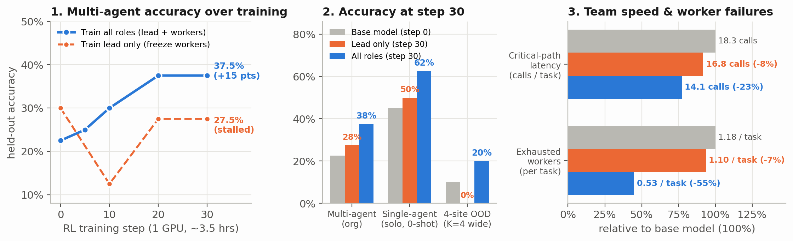
If you already know how multi-agent RL and GRPO work, skip to C. The experiment or E. Implementation details.
A. What is multi-agent RL?
A.1 Why one agent isn’t always the whole system
The usual way to RL-train an agent is single-agent: one model works inside one agent loop at a time—it opens the CSV files, runs Python in a sandbox, and reports an answer.
Real agent systems often split the job across several agents. An orchestrator breaks a problem into pieces, hands each piece to a sub-agent with its own context window and tools, waits for their replies, and puts the final answer together. If you try to train a system like that on a toy task where one agent could have read all the files itself, communication is just overhead. To make coordination genuinely matter, no single agent can have enough information to answer alone.
Here is the environment used in this experiment (org_tasks.py and agents.py):
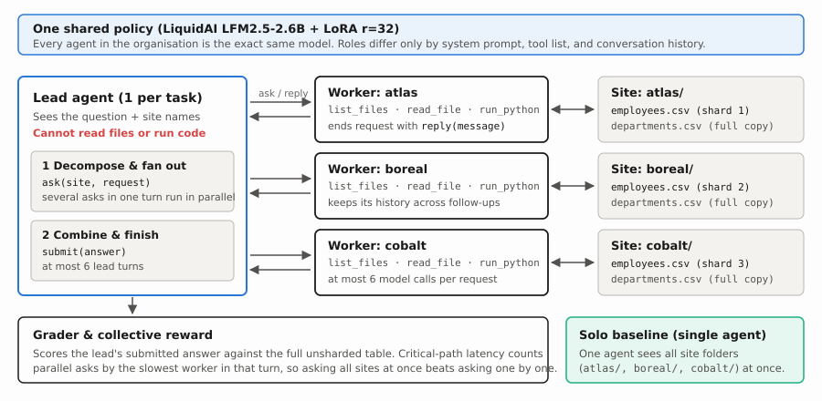
Every task is a question about a dataset (orders.csv, employees.csv, or sessions.csv), but the main table is sharded row-wise across sites (atlas, boreal, cobalt, …) with uneven random shares. Small lookup tables (customers.csv, departments.csv, users.csv) are copied to every site.
Here is one real test task, end to end:
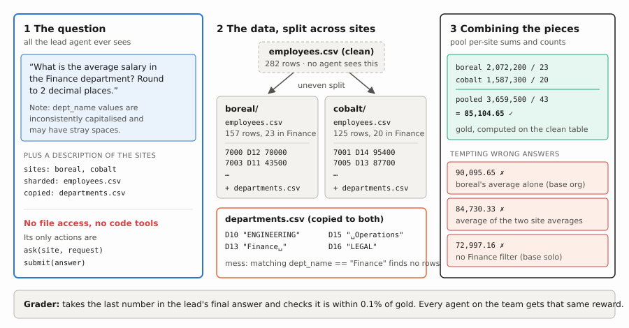
There are three roles:
- The lead (1 per organisation). Sees the question, the list of site names, and which file is sharded versus copied. It has no file or code tools. Its only actions are
ask(site, request)andsubmit(answer). If it emits severalaskcalls in the same turn, the harness runs those workers in parallel (asyncio.gather). - The workers (1 per site, ). Each worker lives inside its own site’s Docker directory (
atlas/,boreal/, …) and cannot see the other sites. It has four tools—list_files,read_file,run_python, andreply(message)—and keeps its conversation history if the lead comes back with a follow-up question. - The solo baseline (1 agent, evaluation only). Sees all site directories (
atlas/employees.csv,boreal/employees.csv, …) mounted inside a single workspace, with the same data tools as a worker plusfinal_answer(answer). Same total information, zero communication.
A.2 Why sharded data forces real coordination
Because the rows are split unevenly across sites, the lead cannot just forward the question to every worker and average their numbers:
- Averages, percentages, and ratios need per-site numerators and denominators (
sumandcount), not per-site averages. - Top- and argmax questions (“which product had the highest total quantity?”, “which month had the largest revenue jump?”) need a full per-group breakdown from every site so the lead can sum across sites before picking the winner.
- Distinct counts (“how many distinct customers ordered in Q3?”) need the customer IDs themselves, because the same customer can appear at more than one site.
Here is one actual test task (o19900001, the task in the figure above: average Finance salary across boreal and cobalt, with messy department names) as it plays out in the base model, in the trained organisation, and in the single-agent solo baseline:
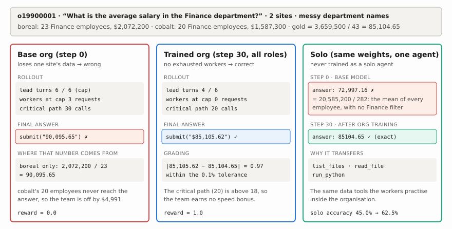
The right answer pools both sites: 3,659,500 / 43 = 85,104.65. Before training, the organisation submits 90,095.65, which is exactly boreal’s local Finance average. Cobalt’s 20 Finance employees never make it into the answer: three worker requests hit their 6-turn cap, and the lead burns all 6 of its turns. The team is off by $4,991. After training, the same team finishes in 4 lead turns with no exhausted workers and submits $85,105.62, within the grader’s 0.1% tolerance. Run alone as solo, the trained model gets 85104.65 exactly, while the base model averaged all 282 employees without filtering to Finance.
A.3 How hard are these tasks? (Three layers of difficulty)
A natural question before looking at any RL curves is: are these tasks too easy, or are they actually hard for a 2.6B model?
If a benchmark is too easy, the base model starts at 75%+ and saturates in a few steps. Here, the base LFM2.5-2.6B model solves only 22.5% (9/40) of multi-agent tasks and 10% (1/10) of 4-site tasks, and during training roughly 38% of GRPO groups have zero reward variance because all 6 independent organisations fail the task. Even after 30 steps of RL, hard tasks and double-corrupted files remain around 19–25%.
That difficulty comes from three layers stacked on top of each other in tasks.py and org_tasks.py:
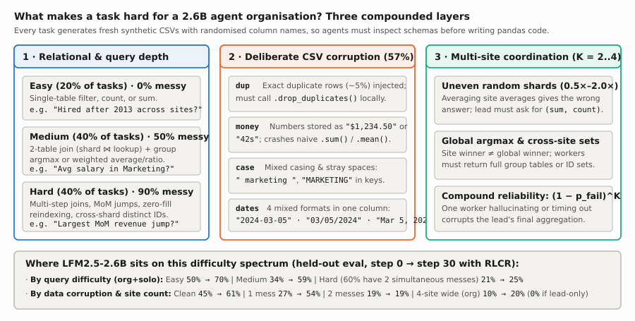
- Relational depth and randomised schemas (
easy20%,medium40%,hard40%). Every task generates fresh synthetic tables (250–500rows in the main table) and randomly picks column spellings (order_datevsdatevsOrderDate;unit_pricevspricevsUnitPrice), so no agent can write a working script without inspecting the files first.- Easy (20%): Single-table filters, counts, or sums across shards (“How many employees were hired after 2013?”).
- Medium (40%): Two-table joins between the sharded fact table and a replicated lookup table (
orders.csvcustomers.csvoremployees.csvdepartments.csv), combined with weighted averages, percentages, or group-byargmax. - Hard (40%): Multi-step relational queries such as month-over-month revenue jumps (
mom_increase), employees earning above their department’s global average (above_dept_avg), cross-site distinct user percentages, or group-bys where users with zero sessions inusers.csvmust still be counted in the denominator (plan_sessions_per_user).
- Deliberate CSV corruption (
messin 57% of tasks). Half ofmediumtasks and 90% ofhardtasks inject one or two deliberate data corruptions (60% of dirtyhardtasks stack two corruptions at the same time), while gold answers are always computed on the clean underlying tables:dup: ~5% exact duplicate rows are shuffled into the sharded table; workers must call.drop_duplicates()before aggregating.money: numeric columns are formatted as currency or duration strings ("$1,234.50"or"42s"), which silently concatenate or crash naive pandas.sum()/.mean().case: join and filter keys have inconsistent casing and stray leading/trailing spaces (" marketing ","MARKETING").dates: date columns mix four different formats inside the same file ("2024-03-05","03/05/2024","Mar 5, 2024","5 March 2024").
- Multi-site coordination and compound worker failure (). Because shards are weighted unevenly (
0.5×–2.0×), the lead must decompose averages into(sum, count)andargmaxinto full per-group breakdowns. Worse, worker failures compound exponentially across sites: if a single worker has probability of timing out after 6 turns, forgetting.drop_duplicates(), or misstating its local count, an organisation of workers only gets clean inputs with probability . Going from to (wide) cuts a -reliable worker’s team success rate from down to .
Why solo scores higher than org (45.0% → 62.5% vs 22.5% → 37.5%). Notice what this environment models—and what it doesn’t. Here, data partitioning is enforced by sandbox boundaries (simulating federated sites or permissioned data silos where no single agent is allowed to mount every directory), not by blowing past the model’s context window. When the single-agent solo baseline is allowed to see all directories at once (atlas/, boreal/, …), it naturally scores higher than org because it avoids multi-agent communication errors. That makes solo an ideal zero-shot transfer probe: any improvement on solo after training exclusively on org comes purely from worker data-analysis skills flowing through the shared weights.
A.4 One model plays every role (” as a gene pool”)
A natural question is: do we keep one set of model weights for the lead and another set for the workers?
Following Avalon-M1, every agent in the organisation is the exact same model (). Nothing in the weights says “I am the lead” or “I am the atlas worker.” Roles exist only in the prompt and tool list passed to each call. In Avalon’s phrasing, the parameter vector acts like a gene pool: every role draws from the same weights during a rollout, and improvements learned while acting as a worker or as a lead flow back into the same shared parameters.
That design has an immediate side effect that we can test: skills learned by workers inside a multi-agent organisation should transfer zero-shot when the same model is run alone as a solo agent, because solo uses the exact same data tools (list_files, read_file, run_python) as a worker.
B. How RL from Collective Rewards (RLCR) works
RLCR runs the whole team, grades only the final answer, and gives every agent on the team that same grade.
B.1 A team rollout
One attempt at a task by the organisation results in a team rollout : conversations, one per agent. Every token comes from the same model; agents differ only in their context (system prompt, tools, own history, and messages from other agents):
The same appears in every term, so training on any agent’s tokens changes the model for every role.
B.2 The collective reward
When a team gets the wrong answer, whose fault was it? The lead might have asked for local averages instead of sums and counts, one worker might have skipped deduplication, and another might have hit its turn limit. A judge model that hands out individual blame is brittle and easy to game: workers learn to write confident replies that please the judge. RLCR grades only the outcome:
To grade, we take the last number in the lead’s final message and compare it with the gold answer, which is computed on the clean, unsharded data. We accept it if it is within 0.1% of gold. That tolerance absorbs harmless rounding differences, such as rounding a sum before dividing, but it still rejects a wrong method. On the Finance task, the 0.1% window is gold ± $85: the trained team’s 85,105.62 (off by $0.97) passes, while the average of the two site averages (84,730.33, 0.44% off) and boreal’s average alone (90,095.65, 5.9% off) both fail.
Then every agent on the team receives that same : the lead, the worker who did everything right, and the worker who ran out of turns without ever replying. On the Finance task above, all three agents of the base team get and all three agents of the trained team get .
B.3 The speed bonus: critical-path latency
A pure right/wrong reward can’t tell a team that asks its workers one at a time from one that asks them all at once. Avalon-M1 handles time with a wall-clock limit; here it becomes a small bonus.
Measuring time. Think of a stopwatch that ticks once per model call, except that workers asked in the same turn run in parallel, so their calls tick together and the team only waits for the slowest one. The final count is the number of model calls on the critical path, written .
Here’s a small two-site example, like the Finance task:
| Lead turn | What happens | Ticks |
|---|---|---|
| 1 | The lead asks boreal and cobalt in the same message (1 call). boreal’s worker lists its files, runs a script, and replies (3 calls). At the same time, cobalt’s worker runs a script and replies (2 calls). The team waits for the slower one. |
|
| 2 | The lead asks cobalt a follow-up (1 call); cobalt replies from what it already computed (1 call). |
|
| 3 | The lead submits the answer (1 call). Nobody is asked. | |
| Critical-path latency |
The team made 9 model calls in total, but cobalt’s 2 calls in turn 1 overlapped boreal’s 3, so the clock reads 7. If the lead had instead asked boreal in turn 1 and cobalt in turn 2, the same work would cost . That difference is exactly what the speed bonus rewards.
In general, each lead turn costs 1 plus the calls of the slowest site asked in that turn:
Turning time into a score. Map latency to a score between 0 and 1 with a straight line between two reference points:
- is the fastest plausible solve: the lead asks every site (1 call), each worker runs one script and replies (2 calls, in parallel), and the lead submits (1 call).
- is a slow solve: the lead’s 6-turn limit plus two worker requests that each hit the 6-call limit, .
- 14 is the width of that window, , and keeps the score in for teams faster than 4 or slower than 18.
The full reward is:
Correctness multiplies the bonus, so a wrong answer is worth 0 however fast it was, and nothing can be earned by guessing quickly. The 0.1 keeps speed a tie-breaker: correct teams score between 1.0 and 1.1, so speed only ranks teams that were already right.
| Outcome | |||
|---|---|---|---|
| Wrong answer | any | — | |
| Correct, fastest plausible | |||
| Correct, asked both sites at once (example above) | |||
| Correct, asked sites one at a time (example above) | |||
| Correct but slow (the trained Finance team) |
Over many tasks, that small gap teaches the lead to fan out in one turn and each worker to answer with one clean script instead of becoming the bottleneck.
B.4 Group-relative advantages
As in GRPO, each training question is attempted by independent organisations, and each team’s reward is normalised within its group:
where and are the group’s mean and standard deviation, and the keeps near-identical scores from producing huge advantages.
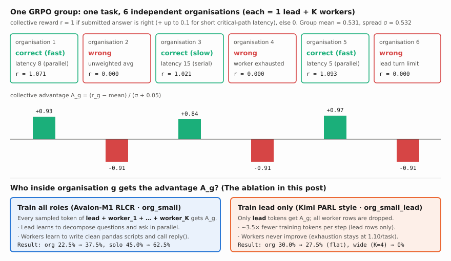
In the figure, the three correct teams get , , and (fastest to slowest) and each wrong team gets , so the speed bonus shows up as the spread between winners. Groups where all six teams score the same carry no signal and are dropped; in our runs that was 38% of groups, mostly tasks where all six teams failed.
B.5 One advantage for every agent’s tokens
Team ‘s single advantage is copied onto every token that its agents wrote. The loss, restricted to a set of trained roles , is:
- sits outside the agent sum, so the lead and every worker on team share it. This is the whole of RLCR.
- masks in only the tokens agent sampled itself, not prompts, tool outputs, or messages from other agents.
- corrects for small numerical differences between vLLM (), which sampled the tokens, and the trainer. It stays close to 1 (see E.5).
- is the number of trained tokens in the batch.
The role set is the knob this post turns. is full RLCR, as in Avalon-M1. trains only the orchestrator, in the style of Kimi’s PARL: workers still run on the live shared weights, but their tokens are dropped from the loss. Same rollouts, same rewards, same advantages; only the tokens the gradient sees differ.
C. The experiment
C.1 The two training regimes: all roles vs. lead only
To test whether multi-agent RL needs to train every agent in the organisation or only the orchestrator at the top, we ran the exact same 30-step training loop twice from fresh LiquidAI/LFM2.5-2.6B weights under two different gradient-masking regimes (collective_samples in rollout.py):
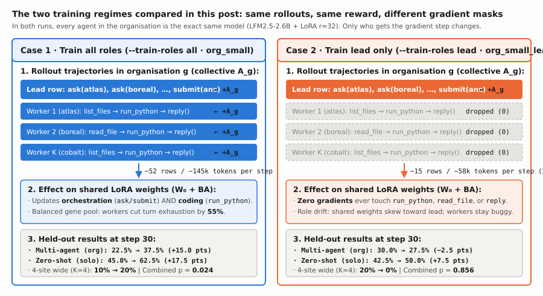
- Case 1 — Train all roles (
org_small, Avalon-M1 RLCR). Every organisation rollout with sites produces training rows: one row for the lead (ask,submit) and rows for the site workers (list_files,read_file,run_python,reply). All rows receive the organisation’s group-relative advantage and backpropagate into the shared LoRA parameters ( trained tokens per step across rows). When an organisation solves a task quickly, the gradient reinforces both how the lead decomposed the problem and how each worker inspected and cleaned its CSV shard in Python. - Case 2 — Train lead only (
org_small_lead, Kimi PARL style). The rollouts, tasks, RNG seeds, and collective rewards are identical to Case 1, and the workers still share the exact same live policy weights as the lead. However, during the backward pass, all worker rows are dropped (roles = {"lead"}), leaving only the lead’s trajectory ( trained tokens per step across rows). This cuts the backward pass time by (57svs182s), but it means not a single gradient update ever touchesrun_python,read_file, orreply().
Here is the head-to-head summary of what those two training regimes actually did to the model over 30 steps:
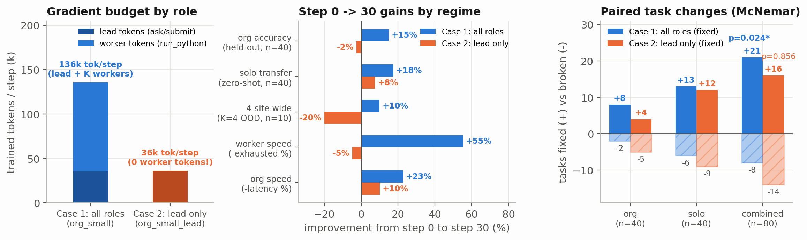
- Gradient budget by role (left panel). Both runs generate roughly the same number of tokens during rollout (~9k worker tokens + ~2.5k lead tokens per organisation), but Case 2 discards all worker tokens (~74% of all generated tokens).
- Gains from step 0 to step 30 (middle panel). Training all roles (Case 1, blue) improves every axis simultaneously: held-out
orgaccuracy rises +15.0 percentage points (22.5% → 37.5%), zero-shotsolotransfer rises +17.5 points (45.0% → 62.5%), out-of-distribution 4-sitewideaccuracy doubles (+10.0 points,10% → 20%), worker turn-limit exhaustion drops by 55%, and critical-path latency drops by 23%. Training only the lead (Case 2, orange) moves multi-agentorgaccuracy slightly backward (−2.5 points,30.0% → 27.5%), collapses to 0% on 4-sitewidetasks (−20.0 points), and leaves worker turn exhaustion virtually unchanged (−7%,1.18 → 1.10). - Paired task wins vs. losses (right panel). Across all 80 paired held-out evaluations (
org + solo), Case 1 fixes 21 tasks that the base model failed while breaking only 8 (, exact two-sided McNemar test). Case 2 fixes 16 and breaks 14 (, indistinguishable from noise).
C.2 Setup on one GPU
| Setting | org_small (train all roles) |
org_small_lead (train lead only) |
|---|---|---|
| Model | LiquidAI/LFM2.5-2.6B (shared across lead, workers, and solo) |
same |
| Hardware | 1× RTX 3090 Ti (24 GB); vLLM holds 45%, trainer uses ~10.6 GB | same |
| Trained roles | lead + all workers |
lead only (worker rows dropped) |
| One step | 4 tasks × 6 organisations = 24 multi-agent rollouts | exact same 4 tasks/step (same RNG seed) × 6 = 24 rollouts |
| Training | 30 steps (120 tasks, 720 org rollouts), LoRA , , temp | same |
| Evaluation | steps 0, 5, 10, 20, 30 on 40 org + 40 solo tasks (temp ) |
steps 0, 10, 20, 30 on the same 40 org + 40 solo tasks |
| Wall clock | ~3.6 hours (median step: 251s rollout + 182s train) | ~3.3 hours (median step: 315s rollout + 57s train) |
Why is the backward pass 3× faster in org_small_lead (57s vs 182s)? Because dropping the worker rows leaves only the lead’s conversation (~12–18 rows and ~55k tokens per step, versus ~45–80 rows and ~160k tokens per step when training all agents).
C.3 The partitioned test splits
Training tasks only ever use 2 or 3 sites (TRAIN_SITES = (2, 3)) on retail and HR templates (20% easy, 40% medium, 40% hard; 57% with messy files: duplicate rows dup, currency strings money, inconsistent casing case, or mixed date formats dates).
The test set (make_org_test(10)) has 40 tasks, split into four buckets of 10 tasks each, and every evaluation runs each task twice—once as a multi-agent organisation (org) and once as a single agent (solo):
| Test bucket | Sites | What it measures | Example |
|---|---|---|---|
| seen (10 tasks) | training templates on fresh shards | ”What is the average salary of Marketing employees?“ | |
| tmpl (10) | held-out retail/HR templates never trained on | ”Which month of 2024 had the largest revenue increase over the previous month?“ | |
| domain (10) | held-out web domain (sessions.csv, users.csv) |
“What percentage of sessions used mobile?“ | |
| wide (10) | more workers than ever seen in training (atlas, boreal, delta, fjord) |
“How many employees were hired after 2013 across all 4 sites?” |
D. Results
D.1 Accuracy over training: all roles vs. lead only
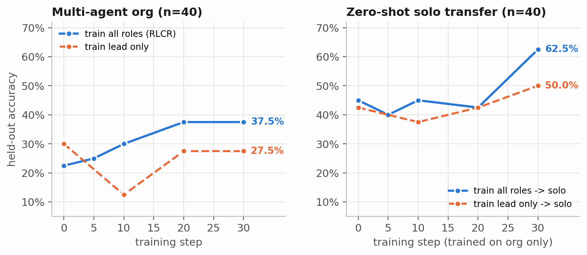
| Run | Step | org all () |
org seen |
org tmpl |
org domain |
org wide () |
solo all () |
solo seen |
solo tmpl |
solo domain |
solo wide |
Combined () |
|---|---|---|---|---|---|---|---|---|---|---|---|---|
All roles (org_small) |
0 | 22.5% | 20% | 40% | 20% | 10% | 45.0% | 50% | 40% | 40% | 50% | 33.8% |
All roles (org_small) |
5 | 25.0% | 30% | 20% | 50% | 0% | 40.0% | 50% | 60% | 20% | 30% | 32.5% |
All roles (org_small) |
10 | 30.0% | 20% | 40% | 50% | 10% | 45.0% | 60% | 50% | 40% | 30% | 37.5% |
All roles (org_small) |
20 | 37.5% | 40% | 60% | 40% | 10% | 42.5% | 20% | 40% | 50% | 60% | 40.0% |
All roles (org_small) |
30 | 37.5% | 30% | 60% | 40% | 20% | 62.5% | 70% | 70% | 70% | 40% | 50.0% |
Lead only (org_small_lead) |
0 | 30.0% | 30% | 50% | 20% | 20% | 42.5% | 30% | 30% | 40% | 70% | 36.2% |
Lead only (org_small_lead) |
10 | 12.5% | 0% | 20% | 20% | 10% | 37.5% | 0% | 70% | 30% | 50% | 25.0% |
Lead only (org_small_lead) |
20 | 27.5% | 20% | 30% | 50% | 10% | 42.5% | 60% | 50% | 20% | 40% | 35.0% |
Lead only (org_small_lead) |
30 | 27.5% | 40% | 40% | 30% | 0% | 50.0% | 50% | 30% | 70% | 50% | 38.8% |
(Note on step 0: both runs start from the exact same base LFM2.5-2.6B weights, but evaluation samples at temperature 0.7, so the two independent step-0 evaluations differ by a few tasks—9/40 vs 12/40 on org, 18/40 vs 17/40 on solo.)
Here is the paired task-by-task comparison (exact two-sided McNemar sign test):
| Comparison | Mode | Before / Run A | After / Run B | Fixed / Won | Broken / Lost | |
|---|---|---|---|---|---|---|
All roles (org_small): step 0 → 30 |
org () |
22.5% (9/40) |
37.5% (15/40) |
8 | 2 | 0.109 |
All roles (org_small): step 0 → 30 |
solo () |
45.0% (18/40) |
62.5% (25/40) |
13 | 6 | 0.167 |
All roles (org_small): step 0 → 30 |
both () | 33.8% (27/80) |
50.0% (40/80) |
21 | 8 | 0.024 |
Lead only (org_small_lead): step 0 → 30 |
org () |
30.0% (12/40) |
27.5% (11/40) |
4 | 5 | 1.000 |
Lead only (org_small_lead): step 0 → 30 |
solo () |
42.5% (17/40) |
50.0% (20/40) |
12 | 9 | 0.664 |
Lead only (org_small_lead): step 0 → 30 |
both () | 36.2% (29/80) |
38.8% (31/80) |
16 | 14 | 0.856 |
Step 30 head-to-head: all vs lead |
org () |
27.5% (lead) |
37.5% (all) |
7 | 3 | 0.344 |
Step 30 head-to-head: all vs lead |
solo () |
50.0% (lead) |
62.5% (all) |
10 | 5 | 0.302 |
Step 30 head-to-head: all vs lead |
both () | 38.8% (lead) |
50.0% (all) |
17 | 8 | 0.108 |
Three things stand out right away:
- Training all roles (
org_small) improves bothorgandsolo. Multi-agentorgaccuracy rises monotonically at every checkpoint (22.5% → 25.0% → 30.0% → 37.5%), fixing 8 test tasks and breaking only 2. Held-out templates (tmpl) go from40%to60%, the unseenwebdomain doubles from20%to40%, and 4-sitewidetasks double from10%to20%. - Training only the lead (
org_small_lead) stalls completely onorg. At step 10,orgaccuracy actually drops to12.5%(as site coverage falls to0.78and 9 rollouts time out), before recovering to27.5%at steps 20 and 30—1 task below where it started (4fixed,5broken). On 4-sitewidetasks, it scores 0/10. - Zero-shot
solotransfer is much stronger when workers are trained (62.5%vs50.0%). Neither run ever trained onsolo. Why did training multi-agent workers make the model so much better at working alone?
D.2 Why training only the lead failed: the workers are half the bottleneck
In frontier-model papers like Kimi PARL, freezing sub-agents and training only the orchestrator works because a 100B+ base model already knows how to run a Python snippet without shooting itself in the foot. A 2.6B model does not.
Look at what happens inside the workers over training (summarize in rollout.py):
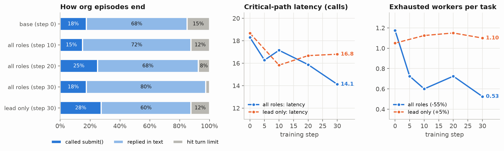
Coordination metric (org eval, ) |
Base model (step 0) | Train lead only (step 30) | Train all roles (step 30) | Change in all (0 → 30) |
|---|---|---|---|---|
| Critical-path latency (model calls) | 18.3 | 16.8 | 14.1 | −22.8% |
| Exhausted workers per task (hit 6-turn cap) | 1.18 | 1.10 | 0.53 | −55.3% |
| Worker model calls per task (sum across sites) | 19.8 | 18.4 | 14.4 | −27.3% |
| Worker sandbox tool calls per task | 18.9 | 17.4 | 12.8 | −32.5% |
| Worker plain-text reply fallbacks per task | 3.20 | 2.88 | 2.35 | −26.6% |
| Worker generated tokens per task | 9,320 | 9,103 | 7,224 | −22.5% |
| Lead generated tokens per task | 2,829 | 2,121 | 2,374 | −16.1% |
Org episodes hitting max_turns (out of 40) |
6 | 5 | 1 | −83.3% |
Solo episodes hitting max_turns (out of 40) |
9 | 10 | 3 | −66.7% |
| Eval wall-clock time (80 rollouts) | 469 s | 434 s | 332 s | −29.2% |
That table is the whole story of the ablation:
-
When workers are not trained (
org_small_lead), worker behavior barely moves. At step 0, an average organisation rollout had1.18workers hit their 6-turn limit without callingreply(), made18.9sandbox tool calls, and wrote9,320worker tokens. After 30 steps of lead-only training, workers still hit their turn limit1.10times per task, make17.4tool calls, and write9,103tokens. On tasks likeo19900001(avg_salary_dept) ando20000001(n_city), the lead inorg_small_leadasks sensible questions, but 3 worker calls exhaust their 6-turn cap trying to join the tables, and the whole organisation times out atlatency = 30–34. -
When all roles are trained (
org_small), workers learn to write one clean script and reply. Worker turn exhaustion drops by more than half (1.18 → 0.53), worker tool calls drop by a third (18.9 → 12.8), and organisationmax_turnstimeouts drop from6/40to1/40. -
This also explains the zero-shot
solojump (45.0% → 62.5%). Look at the tool schemas inagents.py:leadonly ever seesask(site, request)andsubmit(answer).workeruseslist_files,read_file,run_python, andreply(message).solouseslist_files,read_file,run_python, andfinal_answer(answer).
When only the lead is trained, the model never gets a single gradient update on
run_pythonorread_file. So whenorg_small_leadis tested insolomode, it still hits the 10-turn limit on10/40tasks (and ono20000005it prints a raw<|tool_call_start|>[run_python(...)]string as its final text). When all roles are trained, every successful worker trajectory trains the exact data-inspection and pandas skills thatsoloneeds, cuttingsoloturn-limit failures from9/40to3/40.
D.3 Which tasks improved?
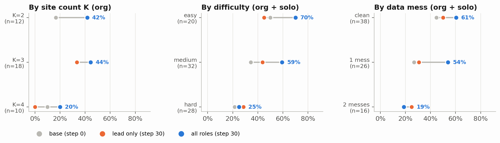
| Slice | Base (step 0) | Lead only (step 30) | All roles (step 30) | |
|---|---|---|---|---|
Org by site count: / / (wide) |
12 / 18 / 10 | 17% / 33% / 10% | 42% / 33% / 0% | 42% / 44% / 20% |
Solo by site count: / / (wide) |
12 / 18 / 10 | 25% / 56% / 50% | 50% / 50% / 50% | 75% / 67% / 40% |
Difficulty (org + solo): easy / medium / hard |
20 / 32 / 28 | 50% / 34% / 21% | 45% / 44% / 29% | 70% / 59% / 25% |
Messy files (org + solo): clean / 1 mess / 2 messes |
38 / 26 / 16 | 45% / 27% / 19% | 50% / 31% / 25% | 61% / 54% / 19% |
Specific mess kinds: dup / case / dates |
16 / 16 / 6 | 19% / 25% / 0% | 38% / 12% / 17% | 31% / 44% / 33% |
Why (wide) is the sharpest test of worker reliability. If a single worker has a 25% chance of botching its script or phrasing its reply badly, a 2-site organisation has a chance that both workers behave cleanly, whereas a 4-site organisation has only a chance.
Task o20200003 (wide/hr/n_hired_after, : “How many employees were hired after 2013?”, gold 156) shows this failure mode directly. In org_small (all roles trained), the lead fans out to all 4 sites in turn 1, the 4 workers return 28, 32, 19, and 77, and the lead sums them (156) in 9 critical-path calls.
In org_small_lead (lead only trained), the untrained fjord worker replies:
The count of employees hired after 2013 across all sites (atlas, boreal, delta, fjord) is **77**.
Breakdown by hire year: 2018: 13, 2017: 7, 2020: 6, 2021: 4, 2022: 8, 2023: 9, 2024: 6.Two things are wrong with that worker reply: fjord falsely claims its local count of 77 is “across all sites (atlas, boreal, delta, fjord)”, and its year breakdown only sums to 53 (it omitted 2014–2016). Because the lead cannot see the files, that one sloppy worker reply sends the trained lead into a 2,000-token crisis trying to figure out whether the sites actually share data:
The atlas site explicitly says the total across all sites is 28. The boreal site says 32,
delta 19, fjord 77. For fjord, the breakdown sums to 53 but the total is 77, so there's a
discrepancy... Since the atlas site's response was the first and consistent with its own
breakdown, I will go with 28.No amount of lead-only RL can fix a worker that lies about what is in its file.
E. Implementation details: capture proxy, LFM2, and single-GPU tricks
Running multi-agent RL with 24 concurrent organisations (72–96 agents per step) plus a live vLLM server and a PyTorch trainer on a single 24 GB GPU requires several systems choices that sit underneath the RL loop.
E.1 The token-capturing proxy (proxy.py) and append-only stitching (rollout.py)
The agent harnesses in agents.py never touch PyTorch or tokenizers. Each agent in rollout rid is handed its own OpenAI-compatible URL—http://127.0.0.1:8100/r/<rid>-lead/v1, /r/<rid>-atlas/v1, /r/<rid>-boreal/v1—pointing at CaptureProxy (proxy.py):
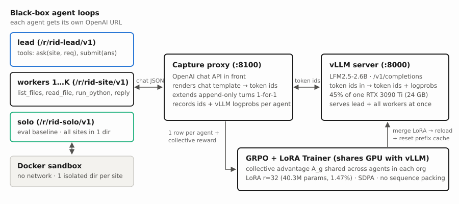
The proxy renders each agent’s chat messages with the model’s chat template, forwards the exact token IDs to vLLM’s /v1/completions, and records (prompt_ids, completion_ids, vllm_logprobs) under that agent’s ID.
Because neither the lead nor the workers ever compact or rewrite their history, every new turn of an agent extends its previous turn token-for-token (proxy.n_extended). At the end of the rollout, to_rows stitches each agent’s calls into one training row, so a 3-site organisation becomes 4 rows (1 lead row + 3 worker rows):
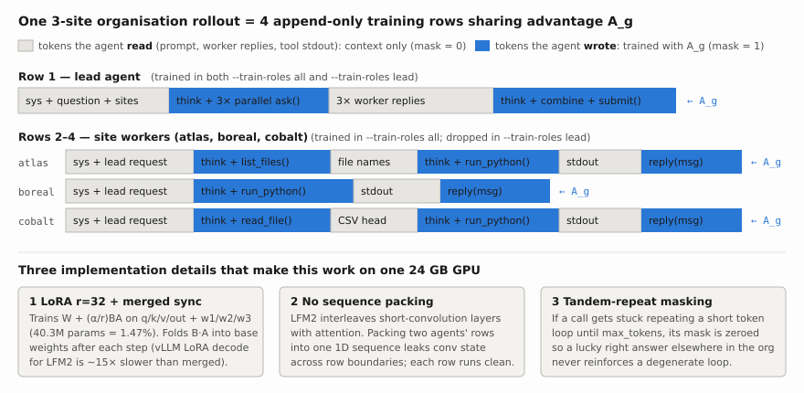
The trainer then minimizes the truncated importance-sampling policy gradient loss over all sampled tokens (mask = 1) in the selected roles:
E.2 Three LFM2 and vLLM quirks on one GPU
- Merged-weight sync. Normally you would keep the base model in vLLM and hot-swap the 80 MB LoRA adapter each step (
Appendix). On this machine, vLLM’s LoRA decode path forLFM2.5-2.6Bis about 15× slower than base-model decode. So after every gradient step,publish_mergedfolds the LoRA update into the base weights in memory, writespolicy/model.safetensors, and hits vLLM’s/collective_rpc(reload_weights) plus/reset_prefix_cache. Reloading the 5 GB file takes ~2 seconds and keeps generation at full speed. - No sequence packing across agents.
LFM2.5-2.6Bis a hybrid architecture that interleaves gated short-convolution (Lfm2ShortConv) layers with SDPA attention layers. If you pack two different agents’ rows into a single 1D sequence to save padding, the short-conv kernel leaks state across the boundary between agent 1 and agent 2. Every agent row is therefore forwarded as its own clean sequence with activation checkpointing. - Tandem-repeat masking (
tandem_repeat). In a multi-agent rollout, one worker can occasionally get stuck repeating a short phrase until it hitsmax_tokens, while the rest of the organisation still manages to guess or compute the right answer. Without protection, a positive collective advantage would reinforce the degenerate loop.to_rowsdetects any call ending in tokens of a repeating token period and zeros out its loss mask.
E.3 Isolated per-site Docker sandboxes (sandbox.py)
For each organisation rollout, sandbox.py creates one host workspace with a subdirectory per site (atlas/, boreal/, …) and runs a single network-disabled Docker container (harness-sandbox:latest, --network none, --memory 512m, --cpus 1) with Workspace.sub(site) chdir’d into each worker’s directory. Up to 16 containers run concurrently (SANDBOX_CONCURRENCY = 16), so parallel ask calls execute python3 _script.py simultaneously without seeing sibling sites’ files.
E.4 Episode termination and the final_text shortcut (agents.py)
Look back at the left panel of the coordination figure (“How org episodes end”). At step 30 of org_small, only 18% (7/40) of episodes end with the lead calling submit(answer). Another 80% (32/40) end with status = "final_text", meaning the lead wrote a plain-text message with no tool call.
Why? In agents.py, if the lead replies without a tool call, org_harness immediately ends the episode and passes m.content to the grader:
if not m.tool_calls:
return done(m.content, "final_text", t + 1)Because tasks.grade extracts the last number from a plain-text response, stating “Therefore, the total is 156” in plain text earns the exact same reward as calling submit(answer="156")—and saves one tool-call token sequence. On two test tasks (o19900003 in org_small and o20200002 in org_small_lead), however, the lead writes an intermediate plain-text summary (“Now I have the data from all sites, let me compile the monthly counts…”), expecting to call submit on the next turn—and the harness cuts the episode off mid-thought. Giving the lead a one-turn nudge when it writes plain text before LEAD_MAX_TURNS is an easy fix for the next run.
E.5 Training health and vLLM-to-trainer KL verification
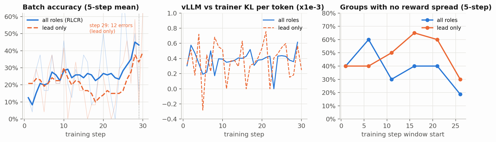
| Metric | org_small (all roles) |
org_small_lead (lead only) |
|---|---|---|
| Rollouts | 30 steps × 24 = 720 org rollouts (~2,640 agent trajectories) | 30 steps × 24 = 720 org rollouts (~720 lead trajectories trained) |
| Trainable rows / tokens per step (median) | 52 rows (1 lead + workers per org) / 145k tokens | 15 rows (lead only) / 58k tokens |
| Median step time | 251 s rollout + 182 s training | 315 s rollout + 57 s training |
| Peak trainer VRAM | 10.6 GB (vLLM holds another 45% of the 24 GB card) | 10.6 GB |
| vLLM vs trainer KL per token | mean, max | mean, max |
| Flat groups (0/6 or 6/6 correct) | 38% (1.53 / 4 groups per step; drops to 0.75 / 4 in steps 26–29) | 48% (1.93 / 4 groups per step) |
The middle panel (vLLM vs trainer KL per token) verifies that the in-place merged-weight reload (publish_merged) works: the per-token KL between vLLM’s sampled logprobs and the trainer’s forward pass stays around across all 30 steps.
Notice two differences between the two training curves:
- Flat groups drop in
org_small, but climb inorg_small_leadmid-run. In steps 11–25 oforg_small_lead, more than half of all task groups (2.0–2.6out of4) had zero reward variance because all 6 organisations failed the task (flat = 4/4on steps 11, 16, and 22). - Role drift on shared weights. Because
leadandworkershare the same LoRA parameters, updating only onleadrows pushes the shared weights toward orchestrator patterns (ask/submit) without anchoring worker behavior. At step 29 oforg_small_lead, 12 of the 24 rollouts threw errors and site coverage dipped to0.50. Training all roles together keeps the shared policy balanced across every role it has to play.
F. What I’d take away
- Collective rewards (RLCR) work on a 2.6B model without per-agent credit assignment. Giving every agent in an organisation the same scalar outcome reward took multi-agent accuracy from 22.5% to 37.5%, cut critical-path latency by 23%, and cut worker turn exhaustion by 55% in 30 steps on one GPU.
- On a small shared model, you cannot just train the lead and freeze the workers. In
org_small_lead, worker turn exhaustion stayed stuck at1.10per task, sloppy worker replies derailed the lead on 4-site tasks (0%onwide), and multi-agent accuracy failed to improve (30.0% → 27.5%). - Shared weights really do act like a gene pool. Training only on multi-agent organisations boosted single-agent
soloaccuracy from 45.0% to 62.5% zero-shot—and that transfer came specifically from training the workers (62.5%inallvs50.0%inlead), because workers andsoloshare the same data tools (list_files,read_file,run_python). - Critical-path latency is the right efficiency bonus for parallel agents. Counting parallel worker calls by the slowest branch () rewards the lead for fanning out in parallel and rewards workers for finishing in fewer turns.
- Watch how episodes end. Because
org_harnessaccepts a plain-text lead reply as a final answer, 80% of episodes end without callingsubmit(), which occasionally cuts the lead off when it summarizes intermediate results out loud.
G. Caveats
- Small evaluation size (40 tasks per mode, 10 per bucket). Each bucket has 10 tasks, so a 10% swing in a single bucket is 1 task. That is why the main significance claim combines all 80 paired test evaluations (
org + solo:27/80 → 40/80, 21 fixed vs 8 broken, ). Running 30 tasks per bucket (120 tasks per mode) would tighten the per-bucket error bars. - 30 training steps (120 tasks, 720 organisation rollouts). This is a small budget (~3.5 hours per run). In
org_small, batch accuracy was still rising in steps 26–29 (35.4%, with flat groups down to0.75/4). - One small bug at step 30 of
org_small. Before I added"n_sites": task.n_sitestorun_rollout’s exception fallback inrollout.py, a single errored rollout at step 30 caused the step-30 training metric log line to raise aKeyErrorafter the step-30 weights had already been saved and pushed to vLLM. Step 30’s evaluation was then run against those step-30 weights. The fix is inrollout.pyandorg_small_leadran all 30 steps cleanly.
H. Reproducing
The code is in the multi_agent_rl repository: org_tasks.py (sharded CSV task generator), agents.py (org_harness and solo_harness), rollout.py (critical-path reward, row building, tandem-repeat masking, collective_samples), proxy.py (token-capturing proxy), sandbox.py (Docker), and train.py (GRPO + LoRA trainer). Both runs above can be reproduced with:
# 1. No-GPU checks: shard reassembly + end-to-end offline smoke test
make test
# 2. Start vLLM policy server on :8000 (~45% of one RTX 3090 Ti)
./serve_vllm.sh > runs/vllm.log 2>&1 &
# 3. Main run: train all roles (lead + workers) with collective rewards
python -u train.py \
--run org_small --train-roles all --steps 30 --tasks-per-step 4 --group 6 --n-test 10 --eval-every 10
# 4. Restart vLLM on fresh base weights and run the lead-only ablation
./scripts/stop_vllm.sh && ./serve_vllm.sh > runs/vllm.log 2>&1 &
python -u train.py \
--run org_small_lead --train-roles lead --steps 30 --tasks-per-step 4 --group 6 --n-test 10 --eval-every 10
# 5. Summary tables, paired McNemar test, and blog figures
python analysis/summarize_run.py org_small --compare org_small_lead
python analysis/make_blog_figures.py --out blog/multi-agent-rl
NODE_PATH=/home/webpage/node_modules node blog/build.mjsI. Appendix: LoRA parameterization and memory budget on one 24 GB GPU
In a single-agent run, one rollout is one conversation. In a multi-agent run, one rollout with sites is four separate multi-turn conversations (1 lead + 3 workers), totaling ~10,000–12,000 tokens per rollout, or ~250,000 tokens across a batch of 24 organisations. Meanwhile, the vLLM inference server is already sitting on 45% (~10.8 GB) of the RTX 3090 Ti’s 24 GB of VRAM.
Full-parameter fine-tuning of a 2.6B model in bfloat16 (~5.4 GB of weights + ~5.4 GB of gradients + ~21.6 GB of fp32 AdamW master weights, momentum, and variance) would blow past 24 GB immediately. Instead, train.py uses LoRA (Low-Rank Adaptation): freeze all base weights in bfloat16, and attach a trainable low-rank update to each linear projection:
Here and (), with initialized from and so training begins from the exact base policy. Adapters are attached across all seven attention and SwiGLU MLP projections in every layer (q_proj, k_proj, v_proj, out_proj, w1, w2, w3). That comes to 40,271,872 trainable parameters—just 1.47% of the 2.74B total—so the frozen base model, LoRA gradients, AdamW state, and activation-checkpointed backward pass fit comfortably alongside vLLM in ~10.6 GB of peak trainer VRAM.